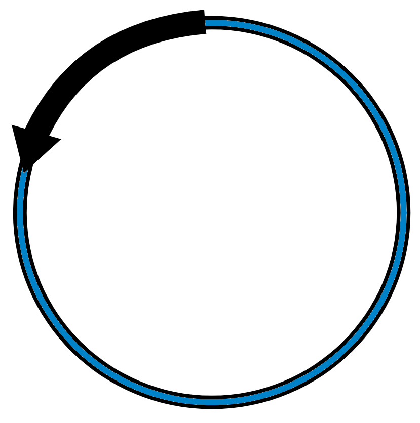
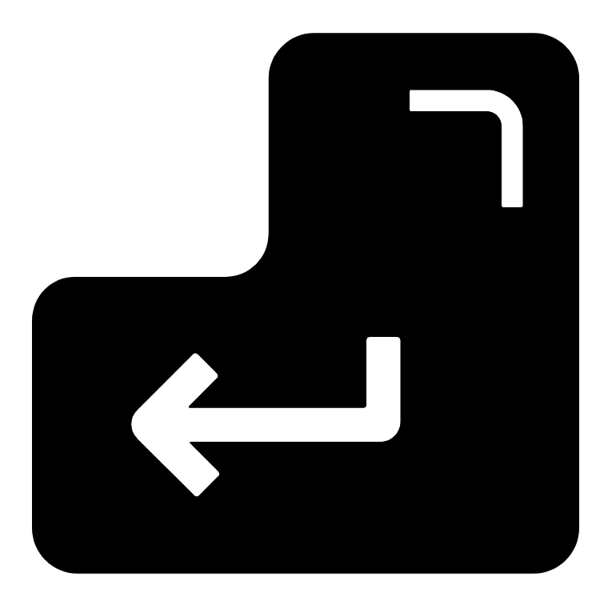

Chapter 9 Annotation

Genome annotation is the act of identifying genomics features and adding useful information to these annotations. This includes adding information on genes, repeat regions, pathways etc..
9.1 Prokka
Prokka is a rapid genome annotation tool for bacterial, archaeal, and viral genomes. It is the standard method for bacterial genome annotation and wraps various other tools to carry out its processes.
Prokka is fast, reliable and basic. It will detect genomic features such as CDS (coding sequence), genes, rRNA, and repeat regions. Additionally, it will provide pathway information for CDS annotations in the form of:
- EC (Enzyme Commission) numbers: This is a scheme of numbers grouping enzymes based on the reaction they catalyse.
- An example EC number is EC 3.1.1. The numbers are hierarchical.
- EC 3 = Hydrolase enzymes.
- EC 3.1 = Hydrolase enzymes that act on ester bonds.
- EC 3.1.1 = Carboxylic Ester Hydrolases.
- More info : https://en.wikipedia.org/wiki/Enzyme_Commission_number
- An example EC number is EC 3.1.1. The numbers are hierarchical.
- COG: Cluster of Orthologous Genes. Orthologs are gene sequences derived from the same ancestral gene present in two species' last common ancestor. COGs group CDS into three main tiers.
- COG Categories: This is the highest level grouping and are represented by the alphabet. Examples include:
- K - Transcription
- Z - Cytoskeleton
- L - Replication, Recombination, and Repair
- Pathways: The step below categories. There are 63 different pathways represented in COG. Each pathway represents a different number of COGs.
- Examples of COG pathways include 16S rRNA modifciation (15 COGs), Arginine biosynthesis (12 COGs), and Glycolysis (18 COGs).
- List of COG pathways: https://www.ncbi.nlm.nih.gov/research/cog/pathways/
- COGs: These are the clusters of Orthologous Genes.
- COGs are represented by a number, a symbol, and a name.
- COG Categories: This is the highest level grouping and are represented by the alphabet. Examples include:
| COG category | Pathway | COG number | COG symbol | Name |
|---|---|---|---|---|
| J - Translation, Ribosomal Structure, and Biogenesis | 16S rRNA modification | COG0742 | RsmD | 16S rRNA G966 N2-methylase RsmD |
| K - Transcription & E - Amino Acid Transport & Metabolism | Lysine biosynthesis | COG1167 | ARO8 | DNA-binding transcriptional regulator, MocR family, contains an aminotransferase domain |
| H - Coenzyme transport and Metabolism | Folate biosynthesis | COG0302 | FolE | GTP cyclohydrolase I |
9.1.1 Prokka: Conda environment & directory

Open a new terminal (right click on the main screen, choose Applications -> Shell -> bash).
We will use the prokka conda environment for our genome annotation.
chos 8
. useprokkaEnsure you are in the standard workflow directory.
cd ~/bacterial_assembly/standard_workflowWhenever I have my final genome assemblies I like to put them into a final directory that will contain all the output for them. Create a final directory and move into it.
mkdir final_assembly
cd final_assemblyFor ease I also like to make a directory that contains all the final assemblies. Additionally, it allows us to name the fasta files with the sample name.
#Make directory
mkdir assembly
#Copy final assembly naming it with the sample name (ecoli)
cp ../circlator/redbean_racon_i2/ecoli/06.fixstart.fasta assembly/ecoli.fasta9.1.2 Prokka: Run

Now it is time to run Prokka annotation
#Make a prokka directory
mkdir prokka
#Run Prokka
#outdir must not exist
prokka \
--addgenes \
--prefix ecoli \
--genus Escherichia \
--species coli \
--kingdom Bacteria \
--outdir prokka/ecoli \
assembly/ecoli.fastaParameters
--addgenes: This will add gene features for each CDS feature.--prefix: The prefix of the output files.--genus: The genus name that will be included in output.--species: The species name that will be included in output.--kingdom: Annotation mode to be used. Options are:Bacteria(default)ArchaeaMitochondriaViruses
--outdir: The output directory ofProkka. This must not exist before running the command.- The last flagless parameter is the fasta file to be annotated.
9.1.3 Prokka: Output

There are a lot of output files in the output directory. Below is a table with information on all these files.
| Extension | Description |
|---|---|
| .gff | This is the master annotation in GFF3 format, containing both sequences and annotations. It can be viewed directly in Artemis or IGV. |
| .gbk | This is a standard Genbank file derived from the master .gff. If the input to prokka was a multi-FASTA, then this will be a multi-Genbank, with one record for each sequence. |
| .fna | Nucleotide FASTA file of the input contig sequences. |
| .faa | Protein FASTA file of the translated CDS sequences. |
| .ffn | Nucleotide FASTA file of all the prediction transcripts (CDS, rRNA, tRNA, tmRNA, misc_RNA) |
| .sqn | An ASN1 format "Sequin" file for submission to Genbank. It needs to be edited to set the correct taxonomy, authors, related publication etc. |
| .fsa | Nucleotide FASTA file of the input contig sequences, used by "tbl2asn" to create the .sqn file. It is mostly the same as the .fna file, but with extra Sequin tags in the sequence description lines. |
| .tbl | Feature Table file, used by "tbl2asn" to create the .sqn file. |
| .err | Unacceptable annotations - the NCBI discrepancy report. |
| .log | Contains all the output that Prokka produced during its run. This is a record of what settings you used, even if the --quiet option was enabled. |
| .txt | Statistics relating to the annotated features found. |
| .tsv | Tab-separated file of all features: locus_tag,ftype,len_bp,gene,EC_number,COG,product |
The first file to look at is the summary .txt file.
less -S prokka/ecoli/ecoli.txtQuestions
- How many CDS are annotated?
- How many repeat regions were detected?
The next best human-readable file is the .tsv file. This is in essence a table with one row per annotated feature.
less -S prokka/ecoli/ecoli.tsvQuestions
- What type of feature (ftype) is the first annotated feature?
- Which have more information tied to them, CDS or gene features?
- How many CDS features have been annotated as "kefF"? (Tip: The
grepcommand is useful) - What is the COG name for COG1662?
We have our final assembly and our annotation now. In the next step we wll create a final report.